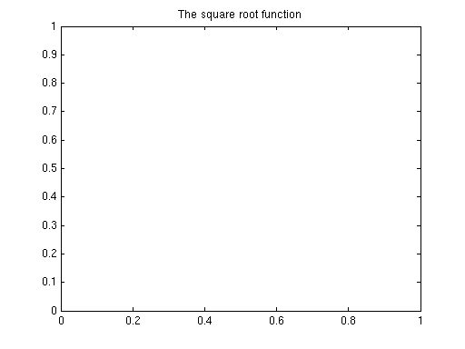
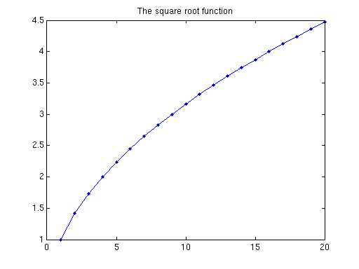

Using Callback Functions
In this demo we see how to use callback functions in the Parallel Computing Toolbox™ to notify us when a task has completed and to update graphics when task results are available. We also see how to use the UserData property of the job to pass data back and forth between the MATLAB® session and the callback functions.
Prerequisites:
For further reading, see:
Contents
Reviewing the Callbacks
The Parallel Computing Toolbox offers us the ability to have a user-defined function be invoked when these events occur:
- A job is queued
- A job starts running
- A task starts running
- A task finishes
- A job finishes
Note, however, that callbacks are only available with the job manager, and not with other schedulers. Consequently, we start this demo by making sure that we are using a job manager.
configName = defaultParallelConfig(); manager = findResource('scheduler', 'Configuration', configName); if ~isa(manager, 'distcomp.jobmanager') error('distcomp:demo:NotJobmanager', ... ['This demo uses callbacks, which are only available with ' ... 'a job manager.']); end
Example: Creating a Trivial Task Finished Callback Function
Let's start with creating a simple task finished callback function. Its only purpose is to display the date and time of completion. Because the task finished callback function is so simple, we will create it as an anonymous function instead of writing it in a separate MATLAB file.
callbackfcn = @(mytask, eventdata) disp(datestr(clock));
We can even invoke this function at the command line, and it will print the current day and time.
callbackfcn();
23-Apr-2010 17:49:29
We can create a job and a task whose FinishedFcn property is set to be callbackfcn. We then submit the job and wait for it to finish. MATLAB will then invoke the callbackfcn function when the task changes its status to finished.
job = createJob(manager);
task = createTask(job, @sqrt, 1, {2});
set(task, 'FinishedFcn', callbackfcn);
submit(job);
waitForState(job, 'finished');
destroy(job);
23-Apr-2010 17:49:30
Example: Using the UserData Property to Track the Number of Remaining Tasks
We now enhance the previous example to show how the task finished callback function can use the UserData property of the job to access the MATLAB workspace on the client computer. Consider the following example: We use a counter to keep track of how many tasks are running, and the task finished callback function decrements this counter and displays its value. We store the counter in the UserData property of the job, and the task finished function can access the job through the Parent property of the task.
type pctdemo_taskfin_callback1
function pctdemo_taskfin_callback1(task, eventdata)
%PCTDEMO_TASKFIN_CALLBACK1 Count the number of remaining tasks.
% The function shows how the task finished callback function can access the
% UserData property of the job and modify it.
% Copyright 2007 The MathWorks, Inc.
% $Revision: 1.1.6.3 $ $Date: 2010/05/10 17:07:35 $
% The UserData property of the job is the counter for the number of
% remaining tasks. We decrement it by one.
job = task.Parent;
numTasksLeft = get(job, 'UserData');
numTasksLeft = numTasksLeft - 1;
set(job, 'UserData', numTasksLeft);
% Display a message about how many tasks there are left.
if (numTasksLeft > 1)
fprintf('There are now %d tasks left\n', numTasksLeft);
elseif (numTasksLeft == 1)
disp('There is now 1 task left');
else
disp('Finished with all the tasks');
end
end % End of pctdemo_taskfin_callback1.
Let's create a small job with numTasks tasks and see what the output of the task finished callback function looks like.
job = createJob(manager); numTasks = 5; set(job, 'UserData', numTasks); for i = 1:numTasks task = createTask(job, @sqrt, 1, {i}); set(task, 'FinishedFcn', @pctdemo_taskfin_callback1); end submit(job); waitForState(job, 'finished'); destroy(job);
There are now 4 tasks left There are now 3 tasks left There are now 2 tasks left There is now 1 task left Finished with all the tasks
Example: Updating the Graphics in the Callback Function
We now turn to a more advanced use of the task finished callback function, namely, using it to add data points to a graph depicting the task results. Let's have a look at the callback function:
type pctdemo_taskfin_callback2;
function pctdemo_taskfin_callback2(task, eventdata)
%PCTDEMO_TASKFIN_CALLBACK2 Update a graph using the task input and output data.
% The function adds the current task results to the graph depicting all
% the results obtained so far.
% Copyright 2007 The MathWorks, Inc.
% $Revision: 1.1.6.3 $ $Date: 2010/05/10 17:07:35 $
% Find the plot that we want to modify, and add the task input and output
% data to the x- and y-axes of the plot, respectively.
p = findobj('Tag', 'pctdemo_taskfin_callbacks2_plot');
if ~ishandle(p)
% We cannot plot onto a nonexisting graph.
return;
end
inArgs = get(task, 'InputArguments');
outArgs = get(task, 'OutputArguments');
currX = inArgs{1};
currY = outArgs{1};
% Add the point (currX, currY) to the list of points currently on the graph.
x = get(p, 'XData');
y = get(p, 'YData');
x = [x, currX];
y = [y, currY];
% We want the lines connecting the data points to approximate the graph of
% the function, so we sort the data points by their x-value.
[x, ind] = sort(x);
y = y(ind);
% Update the graph.
set(p, 'XData', x, 'YData', y)
end % End of pctdemo_taskfin_callback2.
The way we set up this example, we prepare the graph for plotting by invoking the function pctdemo_taskfin_callback2_setup to generate a figure with an empty graph. Let us have a look at that function:
type pctdemo_taskfin_callback2_setup;
function pctdemo_taskfin_callback2_setup()
%pctdemo_taskfin_callback2_setup Prepare a figure for drawing a graph.
% The function initializes the output figure and tags it so that
% PCTDEMO_TASKFIN_CALLBACK2 can access it and modify its graph.
% Copyright 2007 The MathWorks, Inc.
% $Revision: 1.1.6.3 $ $Date: 2010/05/10 17:07:35 $
p = findobj('Tag', 'pctdemo_taskfin_callbacks2_plot');
if isempty(p) || ~ishandle(p)
fig = figure;
figure(fig);
p = plot(NaN, NaN, '.-');
set(p, 'Tag', 'pctdemo_taskfin_callbacks2_plot');
title('The square root function');
end
set(p, 'XData', [], 'YData', [])
end % End of pctdemo_taskfin_callback2_setup.
We now run the function to display the empty graph.
pctdemo_taskfin_callback2_setup();
For demonstration purposes, we let task i calculate sqrt(i). The task finished callback function then adds the task results to the graph that depicts all the results obtained so far. We use a large number of tasks to emphasize how the graph is gradually built as the job results trickle in, and we perform a random shuffle on the sequence 1:numTasks to make the values of the square root function arrive in a truly random order.
job = createJob(manager); numTasks = 20; seq = randperm(numTasks); % Random shuffle of the sequence 1:numTasks. for i = seq task = createTask(job, @sqrt, 1, {i}); set(task, 'FinishedFcn', @pctdemo_taskfin_callback2); end submit(job); waitForState(job, 'finished'); destroy(job);